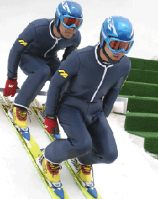

|
SKI JUMPING PAIRS - ROAD TO TORINO 2006
Mashima Riichiro & Kobayashi Masaki | Japan 2005 | 82 min.
Format: DigiBeta
Material: DV
Original language: Japanese
Script: Riichiro Mashima, Masaki Kobayashi
Camera: Makoto Yoshida
Editing: Masaki Kobayashi
Sound: Shingo Takahasi
Music: Dan Miyagawa
Cast: Shosuke Tanihara, Issei Masamune, Kazuyoshi Funaki, Tomoyuki Mashiko
Production: TV Man Union, Inc., Kama Hideki, Kawamura Genki
Special Award Tokyo International Film Festival 2005
Praised as a „human documentary“ this consistently designed fake documentary takes an ironic look at the tradition of films of triumph against adversity. It shows the origins of the sport of ski-jumping for doubles and the adventures of those who want to become great at it. The sport is “discovered” by accident by Professor Harada Toshifumi and he makes it his life’s work to get the sport officially recognised for competitions. Colleague scientist Norman Bates from Boston finds supporting evidence and Harada’s sons, the twin brothers Akinar and Michinori, are guinea pigs and become world champions.
“Surely there’s enough space beside a single ski-jumper on such long skis? The hilarious yet serious shots emerge from my conviction that being serious about something so crazy is the most beautiful thing a person can do.” - Riichiro Mashima
Riichiro Mashima, born in 1972. After attending graduate school at Chiba University, he worked for an environmental design firm, while studying 3D CG design at the Digital Hollywood school in Tokyo. For his graduation project he made a short CG film about the fictional sport of “pair ski jumping” that entered in more than 40 film festivals around the globe. Mashima also supervised the CG sequences for “Ski Jumping Pairs-Road to Torino”
Masaki Kobayashi, born in 1966, joined TV Man Union, Inc. – a leading documentary production house – after graduating from college. Since then Kobayashi has directed more than 80 documentaries, dramas and promotional videos. Among his recent work is “Time Travalling Cops (Jiku Keisatsu)” a 2002 series for the NTV network that mixed fictional and documentary techniques. “Ski Jumping Pairs – Road to Torino” is his feature film debut.
back
|